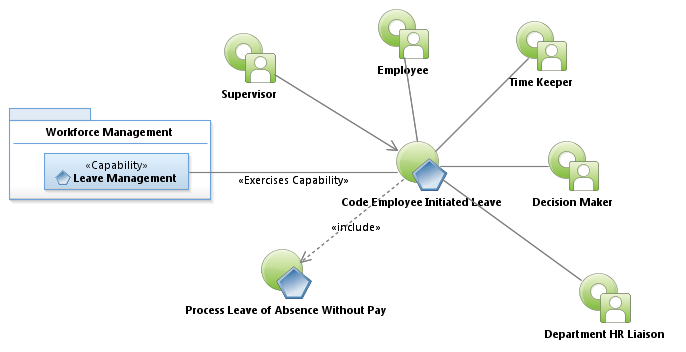
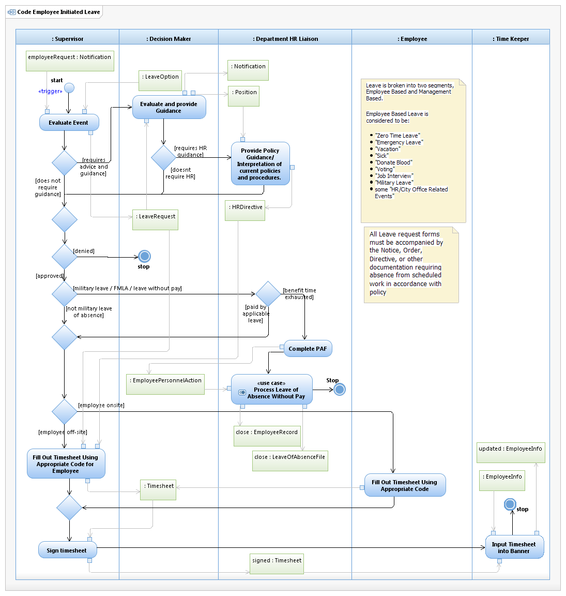

Use Case Model: Code Employee Initiated Leave
Architect: Aaron Brown, IT Enterprise Architect Senior
Date Last Modified: 03/19/2013
User Review: Shannon Flett, Shelly Sheppard, Linda Escamilla, Sharon Huckabee
Date: 03/19/2013
Department may grant paid leave to the employee for authorized purposes as defined by current city policies and procedures. Employee Initiated leave is considered any leave initiated by the employee, not pre-configured within Banner at the time it's used. Examples of this would be: Military Leave, FMLA, Leave without Pay, Sick Leave, Emergency Leave, and Vacation Leave.

Use Case Model: Code Employee Initiated Leave
Follow link to Process Leave of Absence Without Pay

Activity Model: Code Employee Initiated Leave